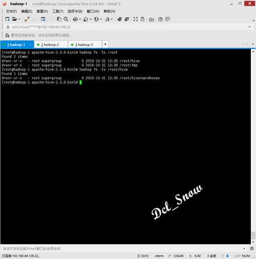
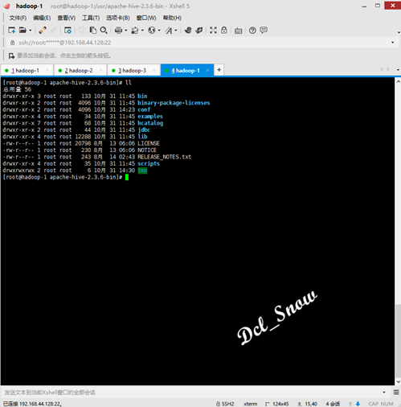

原文连接:https://www.cnblogs.com/Dcl-Snow/p/11980734.html
Hive概述
Hive是基于Hadoop的一个数据仓库工具，可以将结构化的数据文件映射为一张表，并提供类SQL查询功能。
Hive本质是：将HQL转化成MapReduce程序。
Hive处理的数据存储在HDFS中，分析数据底层的实现可以是MapReduce、tes或者Spark，其执行程序运行在Yarn上。
Hive优缺点
优点：
1.使用简单，类SQL语法易于使用。
2.可扩展性，可以随时扩展集群规模。
3.延展性，支持自定义函数。
4.无需开发MapReduce程序。
缺点：
1.效率低延迟高，对处理大数据有优势。
2.不支持记录级别的增删改操作。
3.不支持事物。
4.调优困难。
Hive安装
只在集群中的主节点服务器中进行安装配置即可，安装包可以去官方主页https://hive.apache.org/进行下载：
使用Xftp将安装包上传到hadoop-1的/usr目录下：
进入/user目录，使用tar命令将压缩包进行解压，执行命令：
1 # tar zxvf apache-hive-2.3.6-bin.tar.gz
解压完成后会在/usr目录下生成apache-hive-2.3.6-bin目录：

使用vim编辑环境变量：
1 # vim /etc/profile
新增内容如下：
1 export HIVE_HOME=/usr/apache-hive-2.3.6-bin
2 export PATH=$HIVE_HOME/bin:$PATH
保存退出，，执行命令使修改生效：
1 # source /etc/profile
Hive配置
使用如下命令，在HDFS中创建/root/hive和/root/hive/warehouse两个目录：
1 # hadoop fs -mkdir -p /root/tmp
2 # hadoop fs -mkdir -p /root/hive/warehouse

使用如下命令，为目录赋予权限：
1 # hadoop fs -chmod a+w /root/tmp
2 # hadoop fs -chmod a+w /root/hive/warehouse
hive-site.xml文件配置
使用如下命令，进入Hive配置文件目录，查看文件：
1 # cd /usr/apache-hive-2.3.6-bin/conf
2 # ll
现在没有hive-site.xml文件，使用如下命令，拷贝hive-default.xml.template文件为hive-site.xml文件：
1 # cp hive-default.xml.template hive-site.xml
使用vim编辑hive-site.xml文件：
1 # vim hive-site.xml
将配置文件中的内容做如下更改：
1 <property>
2 <name>hive.metastore.warehouse.dir</name>
3 <value>/root/hive/warehouse</value>
4 <description>location of default database for the warehouse</description>
5 </property>
6 <property>
7 <name>hive.exec.scratchdir</name>
8 <value>/root/tmp</value>
9 <description>HDFS root scratch dir for Hive jobs which gets created with write all (733) permission. For each connecting user, an HDFS scratch dir: ${hive.exec.scratchdir}/<username> is created, with ${hive.scratch.dir.permission}.</description>
10 </property>
11 <property>
12 <name>javax.jdo.option.ConnectionURL</name>
13 <value>jdbc:mysql://localhost:3306/metastore_db?createDatabaseIfNotExist=true&useSSL=false</value>
14 <description>
15 JDBC connect string for a JDBC metastore.
16 To use SSL to encrypt/authenticate the connection, provide database-specific SSL flag in the connection URL.
17 For example, jdbc:postgresql://myhost/db?ssl=true for postgres database.
18 </description>
19 </property>
20 <property>
21 <name>javax.jdo.option.ConnectionDriverName</name>
22 <value>com.mysql.jdbc.Driver</value>
23 <description>Driver class name for a JDBC metastore</description>
24 </property>
25 <property>
26 <name>javax.jdo.option.ConnectionUserName</name>
27 <value>root</value>
28 <description>Username to use against metastore database</description>
29 </property>
30 <property>
31 <name>javax.jdo.option.ConnectionPassword</name>
32 <value>Password@123!</value>
33 <description>password to use against metastore database</description>
34 </property>
35 <property>
36 <name>hive.metastore.schema.verification</name>
37 <value>true</value>
38 <description>
39 Enforce metastore schema version consistency.
40 True: Verify that version information stored in is compatible with one from Hive jars. Also disable automatic
41 schema migration attempt. Users are required to manually migrate schema after Hive upgrade which ensures
42 proper metastore schema migration. (Default)
43 False: Warn if the version information stored in metastore doesn't match with one from in Hive jars.
44 </description>
45 </property>
然后将该配置文件中的所有\${system:java.io.tmpdir}替换为/usr/apache-hive-2.3.6-bin/tmp；
将所有的${system:user.name}替换为root。
使用如下命令，在/usr/apache-hive-2.3.6-bin目录下创建tmp目录，并赋予权限：
1 # mkdir /usr/apache-hive-2.3.6-bin/tmp
2 # chmod a+w /usr/apache-hive-2.3.6-bin/tmp

hive-site.sh文件配置
使用如下命令，拷贝hive-env.sh.template文件为hive-env.sh文件：
1 # cp hive-env.sh.template hive-env.sh
使用vim编辑hive-env.sh文件：
1 # vim hive-env.sh
添加Hadoop的安装路径：
1 HADOOP_HOME=/usr/hadoop-2.7.7
添加数据库驱动包
由于Hive默认使用derby数据库存储元数据，只能单一访问（不能同时打开两个Hive客户端），所以此处使用本机安装的MySQL 5.7数据库，前文已经记录MySQL的安装（前文连接：https://www.cnblogs.com/Dcl-Snow/p/11969388.html），所以将数据库连接的驱动包放到/usr/apache-hive-2.3.6-bin/lib目录下：
Hive使用
使用Hive前，保证Hadoop和MySQL数据库已经启动完成状态。
执行如下命令，进行MySQL的初始化（只需安装配置完毕首次使用执行）：
1 # schematool -initSchema -dbType mysql
登录数据库，使用如下命令进行查询：
1 > show databases;
可以看到在hive-site.xml中配置的数据库metastore_db已经创建：
使用如下命令进行数据库metastore_db的表查询：
1 > use metastore_db;
2 > show tables;
可以查询到初始化数据库生成的Hive相关的表：
使用如下命令进入Hive：
1 # hive
Hive测试
查看数据库：
1 > show databases;
创建数据库：
1 > create database testhive;
进入某数据库：
1 > use testhive;
显示某数据库的表信息：
1 > show tables;
创建数据库表：
1 > create table testtable(id int,name string,age int) row format delimited fields terminated by ' ' lines terminated by '\n';
查看数据库表结构：
1 > desc testtable;
删除某数据库：
1 > drop database if exists testhive;
Hive加载本地文件数据，在/home目录下创建一个test.txt文件，写入以下内容：
1 1 Dcl_Snow 18
2 2 Dcl 19
3 3 Snow 20
执行如下命令，将文件中的数据加载到testhive数据库中的testtable表中：
1 > load data local inpath '/home/test.txt' into table testhive.testtable;
查看表中数据：
1 > select * from testhive.testtable;
注意：
建表时的分隔符，换行符，都要与test.txt中数据的分隔符和换行符相同，否则查询表数据时，会显示数据都是NULL。
{kind=link}
{kind=link}
{kind=link}
{kind=link}
{kind=link}
{kind=link}
{kind=link}
{kind=link}
{kind=link}
{kind=link}
{kind=link}
{kind=link}
{kind=link}
{kind=link}
{kind=link}